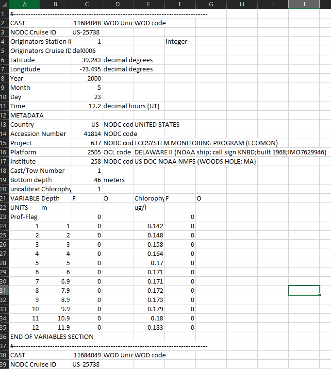
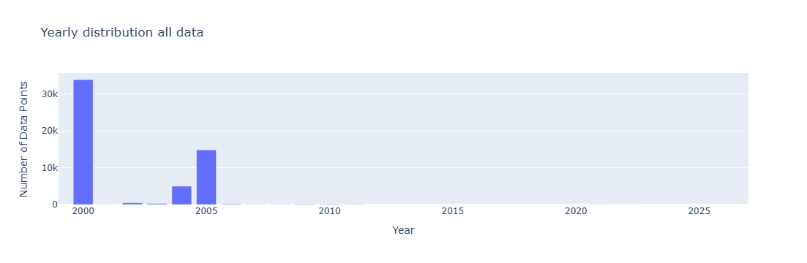
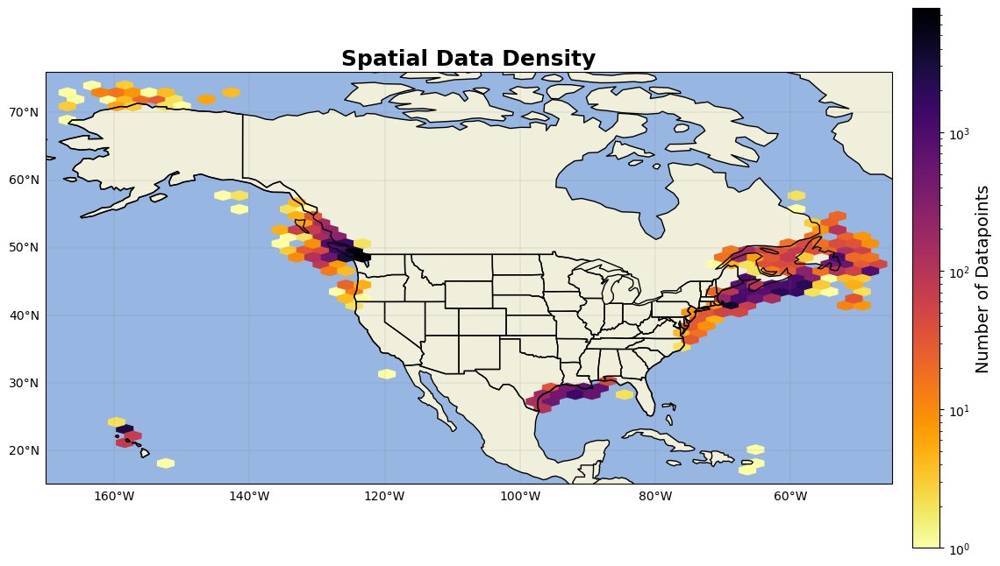

WOD data#
All chlorophyll data from World Ocean Databse (WOD) was compliled from WOD select (https://www.ncei.noaa.gov/access/world-ocean-database-select/dbsearch.html)
WOD was gathered in 3 rounds. The first round had the following entries:
lon: -127 to -52
lat: 76 to 8
dates: 2000-01-01 to 2024- 04-28
dataset: OSD, MRB, SUR
variable: total chlorophyll
The second round had the following entries:
lon: -162 to -47
lat: 77 to 15
dates: 2000-01-01 to 2025- 04-01
dataset: OSD, CTD,PFL
variable: total Chlorophyll
Finally, to ensure ALL ECOMON data is gathered, from WOD select use project query and only gather project with code 637 (ECOMON)
A lot of WOD data relies on code IDs for their metadata. For example, they don’t save the project name but rather assign the project a code number and put that in the column. Use the following files for what each code means: https://www.ncei.noaa.gov/access/world-ocean-database/wod-codes.html
Bear in mind this wod-codes is not completely comprehensive as some entries are missing metadata values.
import numpy as np
import pandas as pd
import matplotlib.pyplot as plt
import cartopy
import cartopy.crs as ccrs
import cartopy.feature as cfeature
from cartopy.mpl.gridliner import LONGITUDE_FORMATTER, LATITUDE_FORMATTER
import geopandas as gpd
from datetime import datetime
import os
from matplotlib import ticker
import datetime as dt
import plotly.express as px
import cmocean as cm
import cmocean.cm as cmo
import matplotlib.gridspec as gridspec
import time
import matplotlib.ticker as mticker
The raw data is organized in csv files into cast blocks, where the rows with ‘END VARIABLE SECTION’ designate the end of that cast block. The def loop below identifies the indexes of each block and processes them individually, including appending the variables into one single dataframe.
Here’s an example of the raw csv file:

#start def loop for reading and organizing raw WOD files
def wod_df(excel_file):
'''
arg: path to the raw excelfile
return: dataframe with unique columns for each variable/ metadata
'''
WOD_raw = pd.read_excel(excel_file, header=None) #load in that excel file
WOD_raw[0] = WOD_raw[0].str.lower() #since there are some inconsistancies with column cases, put everything as lower case
#identify cast_blocks (rows between '#' and 'END OF VARIABLES SECTION')
cast_blocks = []
start_idx = None #to track the start of the index
#first, identify and record the index positions of the cast blocks, i.e. the start and end of each cast
for idx, row in WOD_raw.iterrows(): #for every row
first_cell = str(row[0]) if pd.notna(row[0]) else "" #the first cell of the row (as long as it exists)
if first_cell.startswith("#") and "end of variables section" not in first_cell: #if it's the start of the cast and NOT the end
if start_idx is not None:
cast_blocks.append((start_idx, idx)) #if the first cell is #, record the start indx
start_idx = idx #start of the new cast
elif "end of variables section" in first_cell: #if it's the end of a cast, record the index
if start_idx is not None:
cast_blocks.append((start_idx, idx)) #append this index as the end
start_idx = None
#now that we have the indeces to distinguish each cast block, process the casts individually
all_data = []
for start, end in cast_blocks: #for each pair of index vales in cast_block
cruise_df = WOD_raw.iloc[start:end+1].reset_index(drop=True) #loacte those indexes of that block and make a dataframe
metadata = {}
variable_data_started = False #flag to indicate if inside the VARIABLES section
variable_data = []
for _, row in cruise_df.iterrows(): #for each row in the block of the cast
row_values = row.dropna().astype(str).tolist() #convert to string
if not row_values: #skip all empty rows
continue
if "variables" in row_values[0]: #if the start of the varibale section, turn to true
variable_data_started = True
continue
if "end of variables section" in row_values[0]: #if at the end, break and go back to for loop
break
if not variable_data_started: #if we're in the metadata section
key = row_values[0].strip() #seperate the row into sections
if len(row_values) > 1: #if we are in the metadata section
value = row_values[1].strip() #take from column 2
metadata[key] = value #save as metadata
#metadata.columns.str.lower()
else: #if in variable row
try:
if row_values[0].isdigit() and len(row_values) >= 6:
depth = float(row_values[1]) #append depth
chl = float(row_values[4]) # append chlorophyll
variable_data.append((depth, chl))
#variable_data.columns.str.lower()
except:
continue
#append metadata and variables
for depth, chl in variable_data: #for this row of variables, rename, then append to the dataframe
row = metadata.copy()
row["depth (m)"] = depth
row["chlorophyll (ug/l)"] = chl
all_data.append(row)
df = pd.DataFrame(all_data)
#create datetime
df["datetime"] = pd.to_datetime(df[["year", "month", "day"]]) + df["time"].apply(lambda t: timedelta(hours=float(t)) if pd.notnull(t) else pd.NaT)
return df
File 1/5#
wod_1 = wod_df(r'C:\Users\gianna.milton\Documents\Python\WOD\ocldb1748619702.620293.OSD.csv\ocldb1748619702.620293.OSD.xlsx')
wod_1=wod_1[wod_1['project'] != '33'] #take out CalCOFI values
wod_1=wod_1[wod_1['project'] != '301'] #take out HOTS values
#rename columns
wod_1=wod_1.rename(columns={'depth (m)':'depth','longitude':'lon','latitude':'lat','chlorophyll (ug/l)':'chl'})
#for this project, only want top 150 meters
wod_1=wod_1.loc[wod_1['depth']<=150].reset_index(drop=True)
wod_1.lon= wod_1.lon.astype(float)
wod_1.lat= wod_1.lat.astype(float)
wod_1.chl=wod_1.chl.astype(float)
---------------------------------------------------------------------------
KeyboardInterrupt Traceback (most recent call last)
~\AppData\Local\Temp\ipykernel_19324\847449178.py in ?()
----> 1 wod_1 = wod_df(r'C:\Users\gianna.milton\Documents\Python\WOD\ocldb1748619702.620293.OSD.csv\ocldb1748619702.620293.OSD.xlsx')
2 wod_1=wod_1[wod_1['project'] != '33'] #take out CalCOFI values
3 wod_1=wod_1[wod_1['project'] != '301'] #take out HOTS values
4
~\AppData\Local\Temp\ipykernel_19324\798576877.py in ?(excel_file)
27
28 #now that we have the indeces to distinguish each cast block, process the casts individually
29 all_data = []
30 for start, end in cast_blocks: #for each pair of index vales in cast_block
---> 31 cruise_df = WOD_raw.iloc[start:end+1].reset_index(drop=True) #loacte those indexes of that block and make a dataframe
32 metadata = {}
33 variable_data_started = False #flag to indicate if inside the VARIABLES section
34 variable_data = []
~\AppData\Local\anaconda3\Lib\site-packages\pandas\core\indexing.py in ?(self, key)
1187 axis = self.axis or 0
1188
1189 maybe_callable = com.apply_if_callable(key, self.obj)
1190 maybe_callable = self._check_deprecated_callable_usage(key, maybe_callable)
-> 1191 return self._getitem_axis(maybe_callable, axis=axis)
~\AppData\Local\anaconda3\Lib\site-packages\pandas\core\indexing.py in ?(self, key, axis)
1725 "Consider using .loc for automatic alignment."
1726 )
1727
1728 if isinstance(key, slice):
-> 1729 return self._get_slice_axis(key, axis=axis)
1730
1731 if is_iterator(key):
1732 key = list(key)
~\AppData\Local\anaconda3\Lib\site-packages\pandas\core\indexing.py in ?(self, slice_obj, axis)
1761 return obj.copy(deep=False)
1762
1763 labels = obj._get_axis(axis)
1764 labels._validate_positional_slice(slice_obj)
-> 1765 return self.obj._slice(slice_obj, axis=axis)
~\AppData\Local\anaconda3\Lib\site-packages\pandas\core\generic.py in ?(self, slobj, axis)
4365 Slicing with this method is *always* positional.
4366 """
4367 assert isinstance(slobj, slice), type(slobj)
4368 axis = self._get_block_manager_axis(axis)
-> 4369 new_mgr = self._mgr.get_slice(slobj, axis=axis)
4370 result = self._constructor_from_mgr(new_mgr, axes=new_mgr.axes)
4371 result = result.__finalize__(self)
4372
KeyboardInterrupt:
HPLC flags#
In order to flag for HPLC, seach up each row that has a project name and research if they used HPLC. If no project is included, just assume no HPLC was used
For file 1/5, the following projects were researched:
636 -> SHELF BASIN INTERACTION PROJECT (SBI), looks like not HPLC
597 -> HYPOXIA STUDIES IN THE NORTHERN GULF OF MEXICO (https://www.ncei.noaa.gov/archive/archive-management-system/OAS/bin/prd/jquery/project/details/489), Looks like not HPLC
412 -> MMS/NORTHEAST GULF OF MEXICO PHYS OCEANOGRAPHIC PROGRAM (NEGOM) https://digital.library.unt.edu/ark:/67531/metadc955363/m2/1/high_res_d/3084.pdf, Looks like HPLC
311 CARBON RETENTION IN A COLORED OCEAN (CARIACO), looks like HPLC
#Begin flagging
wod_1['HPLC']=1 #assume all points are not hplc
wod_1.loc[wod_1['project'] == '412', 'HPLC'] = 0
wod_1.loc[wod_1['project'] == '311', 'HPLC'] = 0
wod_1=wod_1[[ 'datetime','lat', 'lon','chl','depth','cast','originators cruise id', 'project','institute','instrument', 'investigator', 'HPLC','accession number']]
Triplicate flags#
Triplicates are found the same way as SeaBASS; by counting the number of unique cast, depths, datetime/date hours, lat, and lon and flagging where there are exactly 3 unique entries.
# triplicate flag
counts_series = wod_1[['cast','depth','datetime','lat','lon']].value_counts() #count how many unique cast,depth, datetime, lat, and lons there are
counts_df = counts_series.reset_index(name='freq_uniq')
wod_1 = pd.merge(wod_1, counts_df, on=['cast','depth','datetime','lat','lon'], how='left') #add frequency column to original dataframe
#sometimes, triplicate specific times are recorded (ex: 3:00, 3:05, 3:10 ), so also check for unique datehour entries
wod_1['date_hour'] = wod_1['datetime'].dt.strftime('%Y-%m-%d %H')
counts_series = wod_1[['cast','depth','date_hour','lat','lon']].value_counts() #count how many unique datehour, lat, and lons there are
counts_df = counts_series.reset_index(name='freq_hour')
wod_1 = pd.merge(wod_1, counts_df, on=['cast','depth','date_hour','lat','lon'], how='left') #add frequency column to original dataframe
wod_1['triplicate'] = 1 #assume bad unless otherwise said
wod_1.loc[wod_1['freq_uniq'] == 3, 'triplicate'] = 0 #if there was a unique datetime, lat, and lon that happened 3 times, triplicate
wod_1.loc[(wod_1['freq_uniq'] == 1) &(wod_1['freq_hour'] == 3), 'triplicate'] =0 #if 1 unique datetime and 3 unique date_hours, assume triplicate
File 2/5#
wod_2 = wod_df(r'C:\Users\gianna.milton\Documents\Python\WOD\WOD_round2_raw\ocldb1761586645.2754592.OSD.xlsx')
wod_2=wod_2[wod_2['project'] != '33'] #take out CalCOFI since appended elsewhere
wod_2=wod_2[wod_2['project'] != '301'] #take out HOTS since appended elsewhere
wod_2=wod_2.rename(columns={'depth (m)':'depth','longitude':'lon','latitude':'lat','chlorophyll (ug/l)':'chl'})
wod_2=wod_2.loc[wod_2['depth']<=150].reset_index(drop=True)
wod_2.lon= wod_2.lon.astype(float)
wod_2.lat= wod_2.lat.astype(float)
wod_2.chl=wod_2.chl.astype(float)
HPLC flags per project.
597 ->HYPOXIA STUDIES IN THE NORTHERN GULF OF MEXICO (https://www.ncei.noaa.gov/archive/archive-management-system/OAS/bin/prd/jquery/project/details/489), no HPLC
636 -> SHELF BASIN INTERACTION PROJECT (SBI), no HPLC
412 ->MMS/NORTHEAST GULF OF MEXICO PHYS OCEANOGRAPHIC PROGRAM (NEGOM) https://digital.library.unt.edu/ark:/67531/metadc955363/m2/1/high_res_d/3084.pdf yes HPLC
wod_2['HPLC']=1 #assume all points are not hplc
wod_2.loc[wod_2['project'] == '412', 'HPLC'] = 0
wod_2=wod_2[[ 'datetime','lat', 'lon','chl','depth','cast','originators cruise id', 'project','institute','instrument', 'investigator', 'HPLC','accession number']]
#triplicate flag
counts_series = wod_2[['cast','depth','datetime','lat','lon']].value_counts()
counts_df = counts_series.reset_index(name='freq_uniq')
wod_2 = pd.merge(wod_2, counts_df, on=['cast','depth','datetime','lat','lon'], how='left')
wod_2['date_hour'] = wod_2['datetime'].dt.strftime('%Y-%m-%d %H')
counts_series = wod_2[['cast','depth','date_hour','lat','lon']].value_counts()
counts_df = counts_series.reset_index(name='freq_hour')
wod_2 = pd.merge(wod_2, counts_df, on=['cast','depth','date_hour','lat','lon'], how='left')
wod_2['triplicate'] = 1 #assume bad unless otherwise said
wod_2.loc[wod_2['freq_uniq'] == 3, 'triplicate'] = 0 #if there was a unique datetime, lat, and lon that happened 3 times, triplicate
wod_2.loc[(wod_2['freq_uniq'] == 1) &(wod_2['freq_hour'] == 3), 'triplicate'] = 0 #if 1 unique datetime recorded and only 3 for datehour, assume triplicate
File 3/5#
wod_3 = wod_df(r'C:\Users\gianna.milton\Documents\Python\WOD\WOD_round2_raw\ocldb1761586645.2754592.CTD.xlsx')
wod_3=wod_3[wod_3['project'] != '301'] #take out HOTS
wod_3=wod_3[wod_3['project'] != '637'] #take out ECOMON since running it later
HPLC flags per project
121 ->SOUTHEAST AREA MONITORING AND ASSESSMENT PROGRAM (SEAMAP) https://www.gsmfc.org/seamap-gomrs, no hplc
597 ->HYPOXIA STUDIES IN THE NORTHERN GULF OF MEXICO, no hplc
wod_3['HPLC']=1
wod_3=wod_3.rename(columns={'depth (m)':'depth','longitude':'lon','latitude':'lat','chlorophyll (ug/l)':'chl'})
wod_3=wod_3.loc[wod_3['depth']<=150].reset_index(drop=True)
wod_3.lon= wod_3.lon.astype(float)
wod_3.lat= wod_3.lat.astype(float)
wod_3.chl=wod_3.chl.astype(float)
wod_3=wod_3[[ 'datetime','lat', 'lon','chl','depth','cast','originators cruise id', 'project','institute','instrument', 'investigator', 'HPLC','accession number']]
counts_series = wod_3[['cast','depth','datetime','lat','lon']].value_counts()
counts_df = counts_series.reset_index(name='freq_uniq')
wod_3 = pd.merge(wod_3, counts_df, on=['cast','depth','datetime','lat','lon'], how='left')
wod_3['date_hour'] = wod_3['datetime'].dt.strftime('%Y-%m-%d %H')
counts_series = wod_3[['cast','depth','date_hour','lat','lon']].value_counts()
counts_df = counts_series.reset_index(name='freq_hour')
wod_3 = pd.merge(wod_3, counts_df, on=['cast','depth','date_hour','lat','lon'], how='left')
wod_3['triplicate'] = 1 #assume bad unless otherwise said
wod_3.loc[wod_3['freq_uniq'] == 3, 'triplicate'] = 0
wod_3.loc[(wod_3['freq_uniq'] == 1) &(wod_3['freq_hour'] == 3), 'triplicate'] =0
File 4/5#
wod_4 = wod_df(r'C:\Users\gianna.milton\Documents\Python\WOD\WOD_round2_raw\ocldb1761586645.2754592.CTD2.xlsx')
wod_4=wod_4[wod_4['project'] != '637'] #take out ECOMON
This file has the same projects as the last one, so no HPLC.
wod_4['HPLC']=1 #no hplc here i think
wod_4=wod_4.rename(columns={'depth (m)':'depth','longitude':'lon','latitude':'lat','chlorophyll (ug/l)':'chl'})
wod_4=wod_4.loc[wod_4['depth']<=150].reset_index(drop=True)
wod_4.lon= wod_4.lon.astype(float)
wod_4.lat= wod_4.lat.astype(float)
wod_4.chl=wod_4.chl.astype(float)
wod_4=wod_4[[ 'datetime','lat', 'lon','chl','depth','cast','originators cruise id', 'project','institute','instrument', 'investigator', 'HPLC','accession number']]
counts_series = wod_4[['cast','depth','datetime','lat','lon']].value_counts()
counts_df = counts_series.reset_index(name='freq_uniq')
wod_4 = pd.merge(wod_4, counts_df, on=['cast','depth','datetime','lat','lon'], how='left')
wod_4['date_hour'] = wod_4['datetime'].dt.strftime('%Y-%m-%d %H')
counts_series = wod_4[['cast','depth','date_hour','lat','lon']].value_counts()
counts_df = counts_series.reset_index(name='freq_hour')
wod_4 = pd.merge(wod_4, counts_df, on=['cast','depth','date_hour','lat','lon'], how='left')
wod_4['triplicate'] = 1 #assume bad unless otherwise said
wod_4.loc[wod_4['freq_uniq'] == 3, 'triplicate'] = 0
wod_4.loc[(wod_4['freq_uniq'] == 1) &(wod_4['freq_hour'] == 3), 'triplicate'] = 0
File 5/5 (ECOMON)#
wod_ecomon = wod_df(r'C:\Users\gianna.milton\Documents\Python\WOD\ocldb1761249916.1960703.CTD.csv\ocldb1761249916.1960703.CTD.xlsx')
wod_ecomon['HPLC']=1
wod_ecomon=wod_ecomon.rename(columns={'depth (m)':'depth','longitude':'lon','latitude':'lat','chlorophyll (ug/l)':'chl'})
wod_ecomon=wod_ecomon.loc[wod_ecomon['depth']<=150].reset_index(drop=True)
wod_ecomon.lon= wod_ecomon.lon.astype(float)
wod_ecomon.lat= wod_ecomon.lat.astype(float)
wod_ecomon.chl=wod_ecomon.chl.astype(float)
wod_ecomon=wod_ecomon[[ 'datetime','lat', 'lon','chl','depth','cast','originators cruise id', 'project','institute', 'HPLC','accession number']]
counts_series = wod_ecomon[['cast','depth','datetime','lat','lon']].value_counts()
counts_df = counts_series.reset_index(name='freq_uniq')
wod_ecomon = pd.merge(wod_ecomon, counts_df, on=['cast','depth','datetime','lat','lon'], how='left')
wod_ecomon['date_hour'] = wod_ecomon['datetime'].dt.strftime('%Y-%m-%d %H')
counts_series = wod_ecomon[['cast','depth','date_hour','lat','lon']].value_counts()
counts_df = counts_series.reset_index(name='freq_hour')
wod_ecomon = pd.merge(wod_ecomon, counts_df, on=['cast','depth','date_hour','lat','lon'], how='left')
wod_ecomon['triplicate'] = 1
wod_ecomon.loc[wod_ecomon['freq_uniq'] == 3, 'triplicate'] = 0
wod_ecomon.loc[(wod_ecomon['freq_uniq'] == 1) &(wod_ecomon['freq_hour'] == 3), 'triplicate'] = 0
Final concatination#
Concat all the files into 1 dataframe and organize to better match with the SeaBASS data. Then, subset to inside North American shapefile
dfs = [wod_1,wod_2,wod_3,wod_4,wod_ecomon]
wod_all = pd.concat(dfs)
wod_all=wod_all[['datetime', 'lat', 'lon', 'chl', 'depth', 'cast','originators cruise id', 'project', 'institute', 'instrument',
'investigator', 'HPLC', 'triplicate','accession number']]
wod_all = wod_all.rename(columns={'originators cruise id':'cruise','project':'experiment','institute':'affiliations','investigator':'investigators'})
Since WOD is a repository with no way of distinguishing between extacted and in vivo, add a data_type_flag to help distinguishe between high resolution sampling methods
wod_all['t_flag']=0 #initialize temporal resolution flag, 0=good, 1= bad (less than 1hour),2=flag (time is 0 i.e repeated)
wod_all['diff_time'] = 0 #column to populate with datatypes as values for organization
wod_all['d_flag'] = 0 #initialize depth flag, 0=good, 1=bad (less than 5m), 2=flag
wod_all['decision'] = 2 #ultimate decision flag inidcating whether to keep or toss data point (0=good, 1=bad,2=flag)
# time
wod_all['diff_time']= wod_all['datetime'].diff()
wod_all.t_flag=np.where(wod_all['diff_time']< pd.to_timedelta('10 minutes'), 1, wod_all.t_flag) #if delta t is less than 1 hour, flag as bad
wod_all.t_flag=np.where(wod_all['diff_time']== pd.to_timedelta(0), 2, wod_all.t_flag) #if 0, then just a repeat so not necessarily bad
#depth
depth_diff =abs(wod_all.depth.diff())#calculate absolute change in depth
wod_all.loc[wod_all[depth_diff<1].index,'d_flag']=1 #if the change in depth is not large enough
wod_all.loc[wod_all[depth_diff==0].index,'d_flag']=2 #if the change in depth doesn't move, set as 2, diff_time and num_s will take care of it
wod_all.decision[(wod_all['t_flag'] ==0) & (wod_all['d_flag']==0)] = 0 #if both good, then good
wod_all.decision[(wod_all['t_flag'] ==0) & (wod_all['d_flag']==1)] = 1 #if everything else is good but the depth is too short, flag as nad
wod_all.decision[(wod_all['t_flag'] ==0) & (wod_all['d_flag']==2)] = 0 #if everything else is good and depth repeats, good
wod_all.decision[(wod_all['t_flag'] ==1) & (wod_all['d_flag']==0)] = 1 #IF TIME IS EVER BAD then the whole thing is bad
wod_all.decision[(wod_all['t_flag'] ==1) & (wod_all['d_flag']==1)] = 1
wod_all.decision[(wod_all['t_flag'] ==1) & (wod_all['d_flag']==2)] = 1
wod_all.decision[(wod_all['t_flag'] ==2) & (wod_all['d_flag']==0)] = 0
wod_all.decision[(wod_all['t_flag'] ==2) & (wod_all['d_flag']==1)] = 1
wod_all.decision[(wod_all['t_flag'] ==2) & (wod_all['d_flag']==2)] = 1
#remove depth flagged data sinve it's the most idicative in vivo flag
wod_all=wod_all[wod_all['d_flag']!=1]
wod_all=wod_all[['datetime', 'lat', 'lon', 'chl', 'depth', 'cast','cruise', 'experiment', 'affiliations', 'instrument',
'investigators', 'HPLC', 'triplicate','accession number', 'decision']]
shp = gpd.read_file(r'C:\Users\gianna.milton\Documents\Python\Shapefiles\combined_coastline.shp')
gdf = gpd.GeoDataFrame(wod_all, geometry=gpd.points_from_xy(wod_all.lon, wod_all.lat), crs="EPSG:4269")
gdf = gdf.to_crs(shp.crs)
wod_all = gpd.sjoin(gdf, shp, how="inner", predicate="within")
columns_to_drop = ['geometry', 'index_right', 'merge_id']
wod_all = wod_all.drop(columns=columns_to_drop)
wod_all= wod_all.reset_index(drop=True)
Done with WOD chlorophyll data!!!
Mishonov A.V., T. P. Boyer, O. K. Baranova, C. N. Bouchard, S. Cross, H. E. Garcia, R. A. Locarnini, C. R. Paver, J. R. Reagan, Z. Wang, D. Seidov, A. I. Grodsky, J. G. Beauchamp, (2024): World Ocean Database 2023. C. Bouchard, Technical Ed., NOAA Atlas NESDIS 97, 206 pp., doi.org/10.25923/z885-h264
Plots#
wod = pd.read_excel(r'C:\Users\gianna.milton\Documents\Python\Coastal_chl_final\wod_chl_na.xlsx')
year_test=wod.copy()
year_test['datetime'] = pd.to_datetime(year_test['datetime'])
year_test['year'] = year_test['datetime'].dt.year
grouped = year_test.groupby(['year']).size().reset_index(name='DataPoints')
# Create bar chart
fig = px.bar(grouped,x='year', y='DataPoints', title='Yearly distribution all data',
labels={'year': 'Year', 'DataPoints': 'Number of Data Points', 'metadata': 'Metadata'},)
fig.update_xaxes(range=[1999,2027])
fig.update_layout(barmode='stack') # ensures stacking
fig.show()

from matplotlib.colors import LogNorm # Important for high-variance data
fig = plt.figure(figsize=(15, 10))
ax = fig.add_subplot(1, 1, 1, projection=ccrs.PlateCarree())
ax.add_feature(cfeature.LAND)
ax.add_feature(cfeature.OCEAN)
ax.add_feature(cfeature.COASTLINE)
ax.add_feature(cfeature.BORDERS)
ax.add_feature(cfeature.STATES)
hb = ax.hexbin(year_test.lon, year_test.lat, gridsize=50, cmap='inferno_r', mincnt=1, transform=ccrs.PlateCarree(),norm=LogNorm())
cb = plt.colorbar(hb, ax=ax, orientation='vertical', pad=0.02, shrink=0.8)
cb.set_label('Number of Datapoints', fontsize=14)
gl=ax.gridlines(linewidth=0.2,color='grey',alpha=0.7,linestyle='-', draw_labels=True, x_inline= False,y_inline=False)
gl.xformatter=LONGITUDE_FORMATTER
gl.yformatter=LATITUDE_FORMATTER
gl.top_labels = False # Disable top labels
gl.right_labels = False # Disable right labels
ax.set_xlim(min(year_test.lon)-2,max(year_test.lon)+2)
ax.set_ylim(min(year_test.lat)-2,max(year_test.lat)+2)
ax.set_title('Spatial Data Density', fontsize=18, fontweight='bold')
plt.show()
